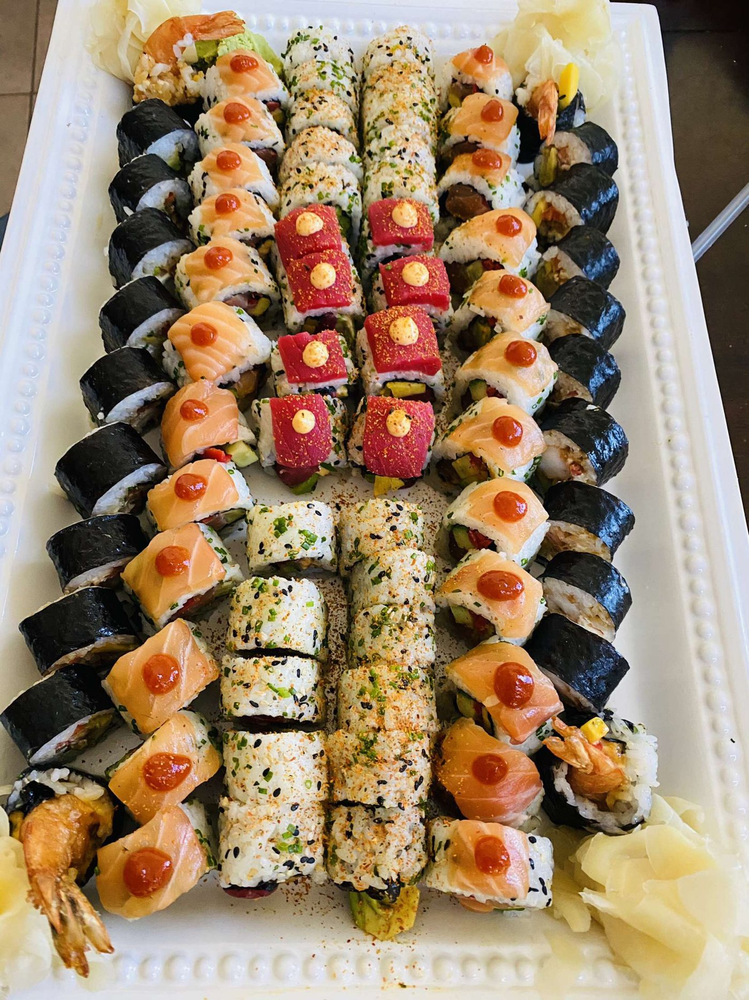
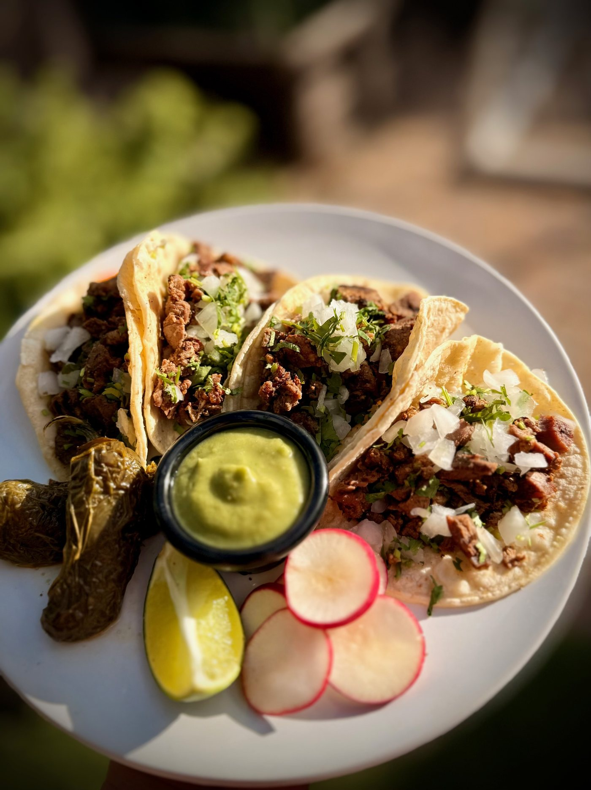
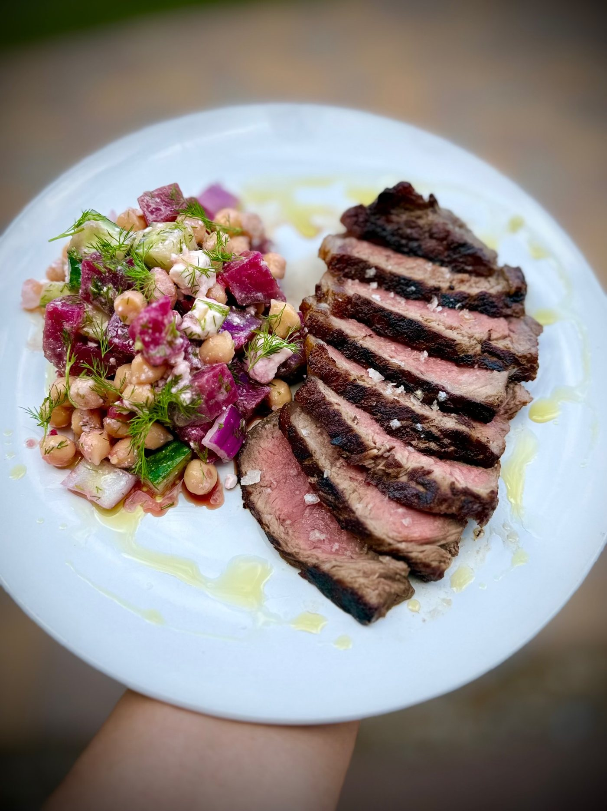
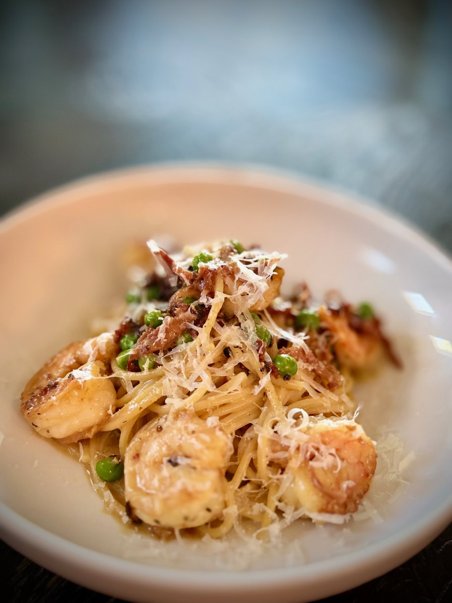
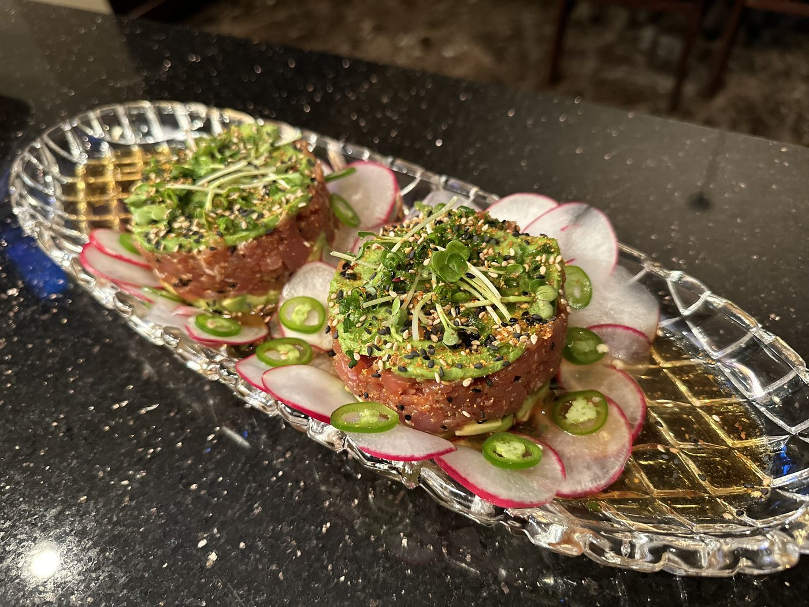
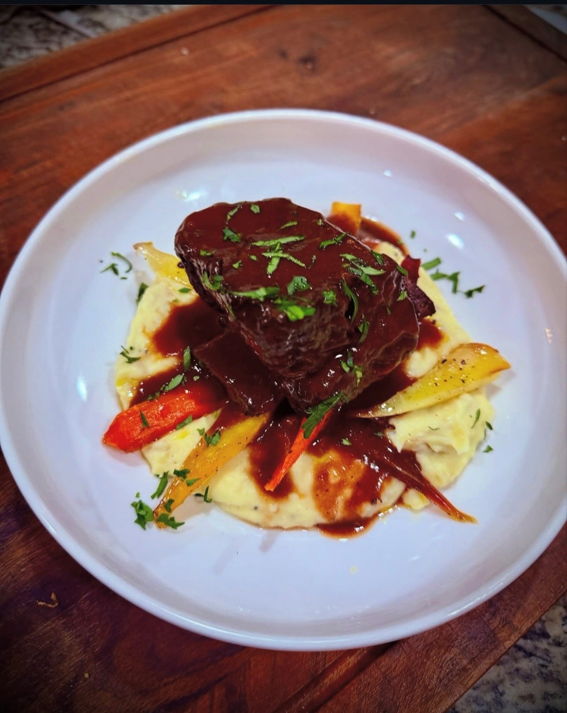
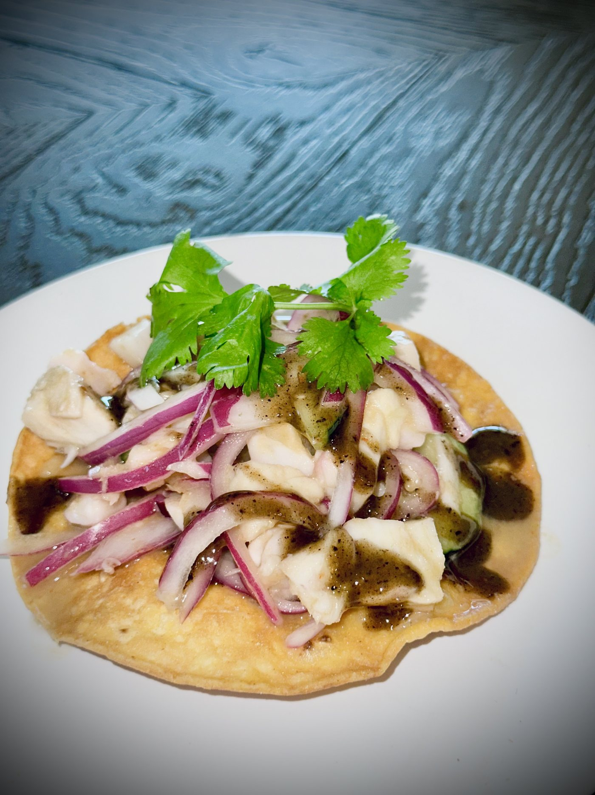
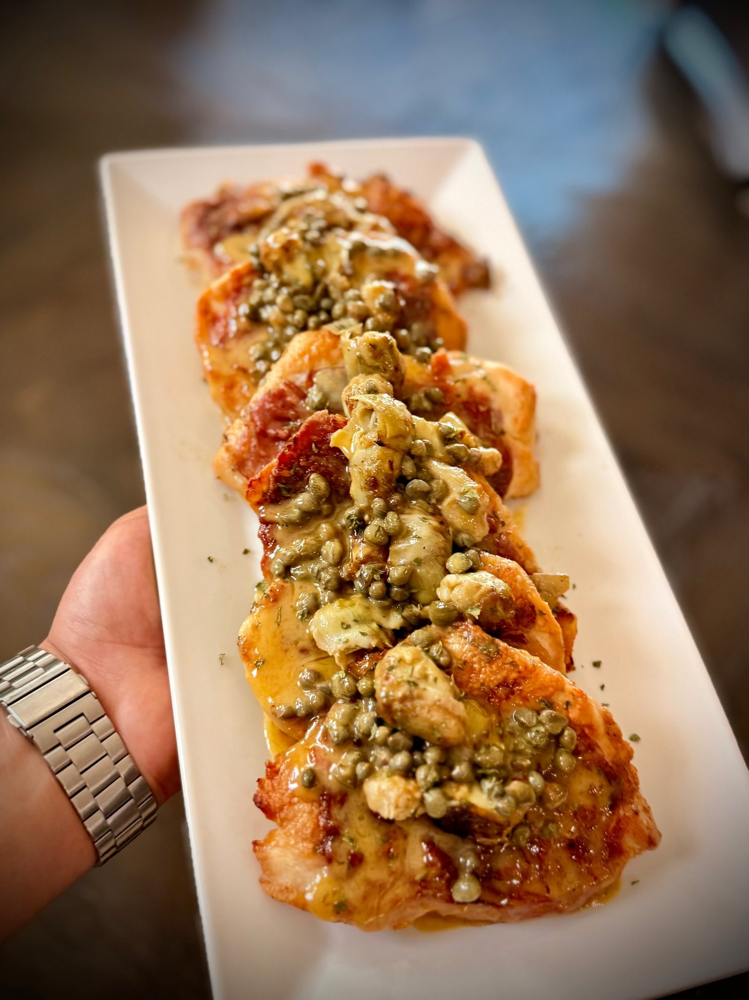
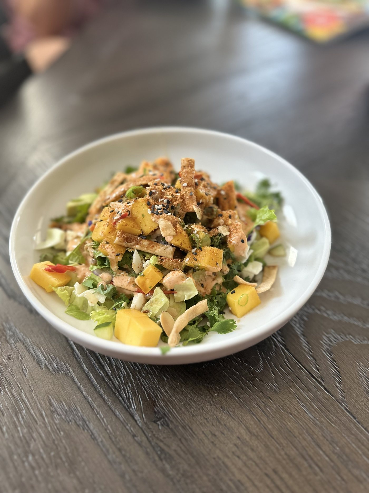

Drop-Off Catering
Freshly prepared platters and trays ready for birthdays, family gatherings, office lunches, graduations and casual celebrations.
Chef Adrian Martinez • Arizona
Custom catering shaped by Latin roots, restaurant experience and a love for bringing people together around memorable food.
Adrian Martinez brings a diverse culinary background and a personal connection to food to every event he caters.
With Salvadoran roots, Adrian grew up with an appreciation for bold flavors, comforting dishes and the sense of community at the heart of Latin cuisine. His professional experience spans steakhouses, upscale Italian restaurants, seafood kitchens and sushi preparation.
That mix of heritage and experience gives him the flexibility to create a Latin-inspired menu, steakhouse favorites, seafood, pasta, sushi or something completely custom for your event.

No fixed one-size-fits-all menu. Catering can be customized around your guest count, budget, cuisine and preferred service style.
Freshly prepared platters and trays ready for birthdays, family gatherings, office lunches, graduations and casual celebrations.
Generous entrées, sides, salads and more designed to serve a crowd while still feeling thoughtful and elevated.
A more personal dining experience for anniversaries, dinner parties, rehearsal dinners and smaller special occasions.
Latin-inspired, steakhouse, Italian, seafood, sushi or something entirely different. Tell Adrian what you have in mind.
Every image below is food prepared by Adrian — from Latin-inspired plates and sushi to steakhouse, seafood and Italian dishes.








Already know what you want? Great. Still figuring it out? That's fine too. Share a few details and Adrian can help shape the menu and service style.
Serving the Greater Phoenix East & West Valleys.
Professional food-safety and sanitation practices are followed throughout preparation and service.